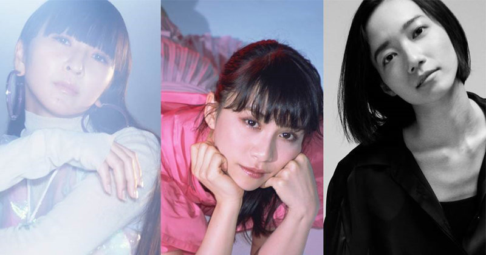
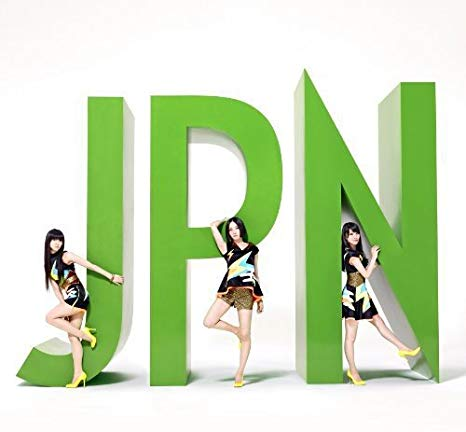
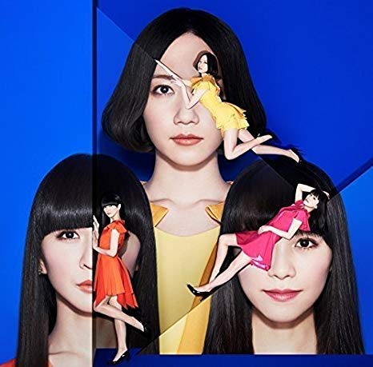
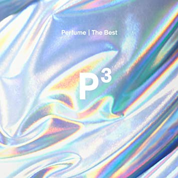

MY BEST
Music
Perfume＜
BUMP
OF
CHICKEN

Perfume
広島県出身の3人組テクノポップユニット。2001年にアクターズスクール広島で結成。2005年に2度目のメジャーデビューを果たす。2007年に『ポリリズム』がNHKの環境リサイクルキャンペーンのCMに起用されたことで一躍有名となる。デビューからすべての楽曲を中田ヤスタカが提供し、テクノポップを確立させる。

『JPN』
2011年発売の3rdアルバム。これまでの楽曲とは対照的にJ-pop色が強いアルバムとなっている。声にエフェクトをかけることで有名だが、このアルバムではエフェクトが薄く歌ものに近い仕上がりとなっている。収録曲『575』は小室哲哉から絶賛され、「時代が遅かったらミリオンいってた」と言わせるほど。

『COSMIC EXPLORER』
2016年発売の6thアルバム。全楽曲名が英語になっており、海外色が強いアルバムとなっている。米ローリングストーンズ誌における、2016の年間「ベストポップアルバムTOP20」において16位に選出される。ジャケット写真を吉田ユニが担当しユニークな世界観を演出した。おすすめは「Cosmic Explorer」「Miracle Worker」

『P Cubed』
2019年発売のベストアルバム。2005年のメジャーデビューから最新までの楽曲が収録されている。シングル曲から多く選出され波紋を呼ぶ。未発表曲2曲が収録され、1曲は最新曲だったが、もう1曲がメジャーデビュー前の楽曲であったことがわかりファンの間で話題となった。